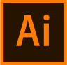

RISD Museum Rebrand
Identity design & Branding



Table of contents
Background
Goal
Process
Final Product
Background
Since its establishment, RISD Museum has undergone several identity revisions. However, I felt that its current identity still lacked awareness and consistency. The logo, only visible on a handful of posters outside the museum and a few pages on the website, wasn’t standardized across the museum’s materials. Many are even unaware that a logo exists.As part of my graphic design studies at the Rhode Island School of Design, I completed a rebranding for RISD Museum with the intention of exploring the field of branding while further familiarizing myself with Adobe design softwares.
Goal
Create a new identity systi of RISD Museum that can:
1.Be applied to a wide range of materials to make it immediately recognizable
2. Establish a place in memories
3. Reflect the museum's brand
To achieve this goal, I divided my design process into six steps-follow along below!
1.Research
Goal:understand the client needs to develop an appropriate
visual language.
To construct a well-defined identity, I first need to understand RISD Museum as a whole. I presented
myself
with the following guidelines to carry out my research of the museum, and created a moodboard to present all
my findings. Sources I used (apart from Google of course) ranged from the museum’s official site, interviews
with museum staff & RISD faculties, online reviews, to personal visits (multiple times, shoutout to free
student admissions!).I also examined current identity to find out what I like & want to change.


2.Discovery
Goal:identify elements/images to use in the development of the identity
.
After the initial research, I performed a visual distillation with the goal of generating keywords that
I
want to focus on during my design.I generated 5 final keywords, then organized my data, in the form of
images or texts, according to their relevance to these keywords.
I used a wordcloud to visualize the most occurring words in the museum’s mission & values, which I can use
in my logo design as guidelines. I also noticed recurring elements of juxtaposition in multiple categories
of my initial research, from how the museum displays both student’s hand-drawn work and ancient Greek
sculptures to how the museum’s modern exterior stands out from its neighboring New England buildings.
3.Extraction
Goal:develop a logo that communicates the essence of RISD museum to the public.
This is where my keywords come into play! Using them as guidelines, I looked into how I can extract the
potential of visuals in their respective categories to eventually develop a graphic symbol, by working them
into type, integrate textures, apply colors & image…the list goes on.
I performed 3 rounds of iterations, each time creating 15 variations of the same logo. At the end of each
iteration, I asked 5 different individuals for feedback whose backgrounds ranged from professors, museum
employees, to international students.
4.Standardize- set theme
Inspired by the texture of letterprint machine, I decided to combine a variety of grunge brush strokes Color- give off a celebratory feeling Type: Franklin Gothic, bold while being clean and legible display, good for headlines
5.Communicate
6.Testimonials
Final product
Next steps
Reflection